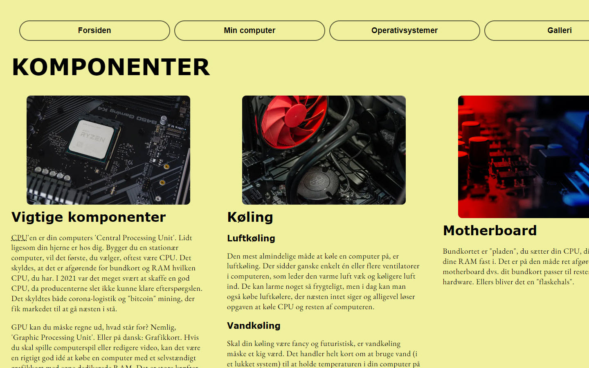
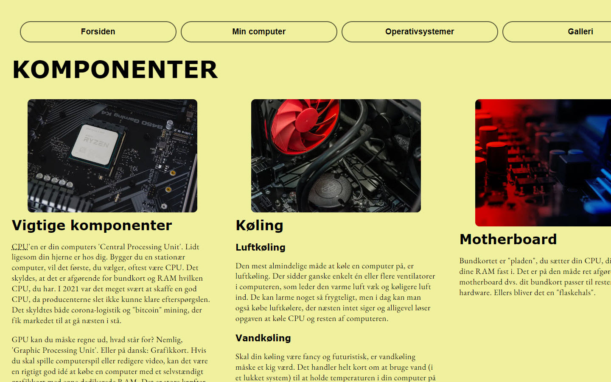
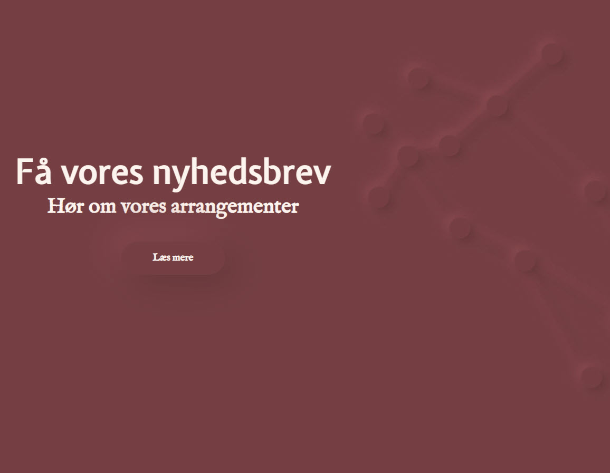
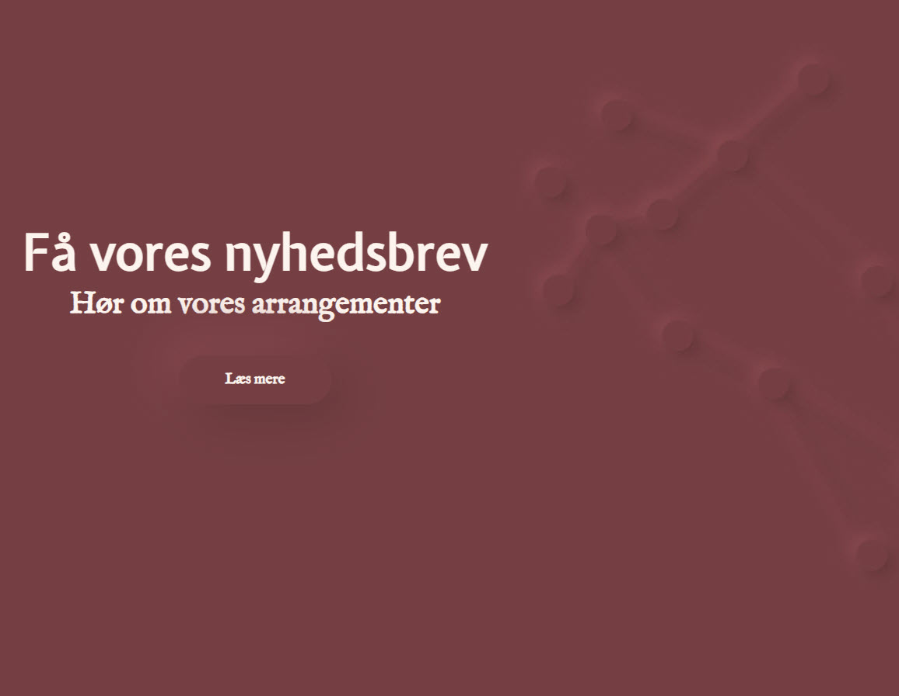
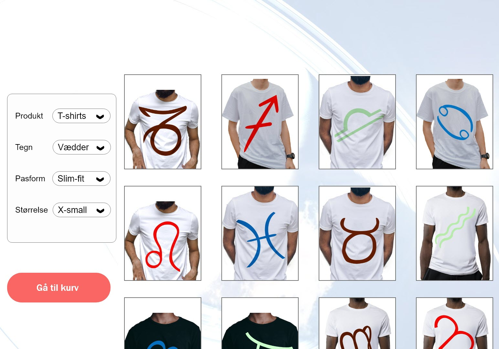
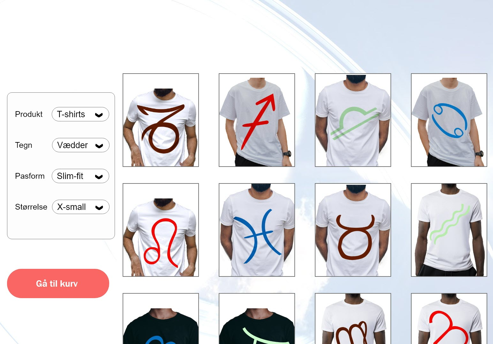

Velkommen
Klik
...når du er klar
M
i
c
h
o
s
P
o
r
t
f
o
l
i
o
Præsentationskort
Tema 1 - Intro-ugen
"Hvem er Micho..?"

Allerede i intro-ugen fik vi lov til at prøve kræfter med ét af Adobes programmer: Adobe XD! Vi skulle lave et lille kort med en præsentation af os selv. Jeg valgte at gøre mit meget simpelt - dels fordi jeg elsker minimalisme - og dels fordi jeg var ret usikker på, om jeg nu var god nok til at lave design.
Astroforce
Tema 1 - Intro-ugen
'Astro-superhelte'

I introugen blev vi sat i grupper, og skulle lave en film, der præsenterede alle gruppens medlemmer på en kreativ måde. I min gruppe valgte vi at have astrologi som tema for filmen, hvor vi fremstillede hvert af gruppens medlemmer som superhelte, der havde superkræfter baseret på vores stjernetegn.
Screenshots
Herunder ser du 4 screenshots fra filmen. Du ser bl.a mig som Stenbukken, der har evnen til at styre jord-elementet som superkræft. Du ser også et screenshot fra Løvens superkraft, som er var ild-elementet, som et screenshot af den samlede gruppe af astrologiske superhelte, under navnet "Astroforce".


Se videoen
Herunder kan du se hele videoen. Den blev klippet i premier pro. Ét af medlemmerne tegnede et logo til filmen, som jeg animerede i Adobe After Effects. Derudover animerede jeg også al tekst til filmen.
Studiestartsprøve
Tema 2 - Grundlæggende web
Om computere

Efter 2 uger på uddannelsen fik vi til opgave at kode en hjemmeside i HTML og CSS. Udfordringen bestod i at lave grids med css grid og dermed få stillet en række billeder korrekt efter udleveret wireframes og layoutdiagrammer. Siden handlede om computere og hardware.
Screenshots
Herunder ser du screenshots fra det website jeg kodede. Jeg har tidligere taget et grundforløb som webudvikler, så jeg havde relativt let ved at lave denne opgave. Derfor hyggede jeg mig gevaldigt med at lave en gul baggrundsfarve og hover-effekter på navigations-knapperne.
 

Ekliptika = Re-design
Tema 2 - Grundlæggende web
Nyt logo
Efter 2 uger på uddannelsen fik vi til opgave at kode en hjemmeside i HTML og CSS. Udfordringen bestod i at lave grids med css grid og dermed få stillet en række billeder korrekt efter udleveret wireframes og layoutdiagrammer. Siden handlede om computere og hardware.
Screenshots
Herunder ser du screenshots fra det website jeg kodede. Jeg har tidligere taget et grundforløb som webudvikler, så jeg havde relativt let ved at lave denne opgave. Derfor hyggede jeg mig gevaldigt med at lave en gul baggrundsfarve og hover-effekter på navigations-knapperne.

 


Astro-Tees
Tema 3 - Grundlæggende UX
Astrologiske T-shirts

I dette tema skulle vi arbejde med idé-udvikling til, og produktion af, en XD-prototype af en webshop. Emnet for webshoppen var igen valgfrit - og igen valgte jeg astrologi som tema. Jeg photoshoppede nogle illustrationer af symbolerne for de 12 stjernetegn, som jeg selv har lavet, ind på nogle T-shirts (se billedet ovenfor).
Om webshoppen
Jeg ønskede, at webshoppen skulle have en følelse af "lethed" og overskuelighed. Jeg søgte at gøre brugerrejsen så nem og burgervenlig som muligt. Jeg arbejdede bl.a. med det UI-pattern der kaldes "adaptable view".
Skitser og prototype
Herunder ser du nogle af mine skitser fra mit design-sprint i idé-udviklingsfasen. Du ser også en lofi-prototype, mit styletile og et par billeder fra den endelige hifi-prototype.
 

"Michos Martian
Meteorite Mashers"
Tema 4 - Grundlæggende animation
"Paper Prototype"

Vi skulle lave et computerspil - og jeg tænkte at jeg igen ville vælge at have astrologi som tema. Derfor tænkte jeg, at spille foregå i rummet, og være en form for kopi af det klassiske spil "space invaders".Herover ser du den papir prototype jeg lavede som udgangspunkt for spillet.
Om spillet
Jeg endte med ikke at have astrologi-tema for spillet - simpelthen fordi min idé, om at man skulle kunne flyve med 12 forskellige rumskibe, afhængigt af hvilket af de 12 tegn man er født i. I stedet valgte jeg at spillet skulle have et grønt rumvæsen i hoved. Denne grønne rum-mand fik til opgave at forsvare sin hjemplanet imod en række asteroider, der truer folkene på hjemplanetens overlevelse.
Skitser og spilskærme
Herunder ser du de første skitser jeg lavede til spillet. Jeg gik med de første idéer, og lavede ud fra flat-design stil. På de sidste billeder ser du screenshots af de færdige skærme - både fra intro, slutskærme og gameplay.


Pen & Paper
Tema 5 - Grundlæggende indhold
"iacta alea est"

Vi skulle interviewe en person med en passion... en såkaldt "passions-person". Jeg valgte at interviewe Chrys fra klassen, som har en stor passion for rollespil.
Om rollespil
Der findes flere former for rollespil - bl.a live-rollespil, som de fleste nok tænker på, når de hører ordet 'rollespil'. Men Chrys, som jeg interviewede, spiller også en anden form, kaldet "Pen & Paper". I denne form for rollespil bevæger man sige ikke rundt ude verden. Man sidder derimod sammen med en gruppe mennesker, og lever sig ind i et univers skabt i fantasiens verden.
Video og Vektor
Til siden lavede jeg en landing page, med en række timede animationer af vektor-tegninger, jeg havde tegnet i hånden, og tegnet op i illustrator. Herunder ser du også en et par screenshots fra interviewet jeg lavede med Chrys.